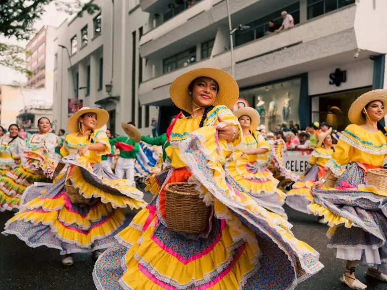
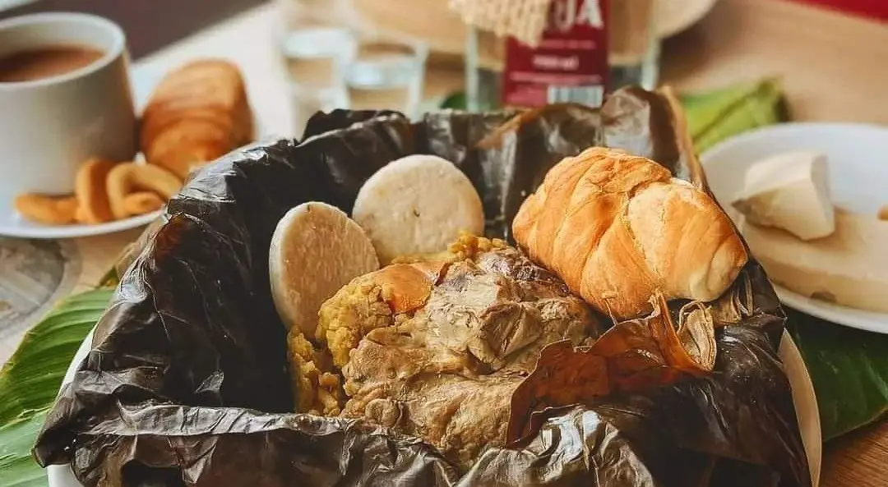

Los concursos que forjaron la identidad musical de Ibagué

A continuación, veamos algunos de los festivales y eventos que contribuyeron a que Ibagué construyera su imagen como ciudad musical:
Se realizó el Congreso Nacional de Música, impulsado por el entonces director del Conservatorio del Tolima, Alberto Castilla. Su objetivo era promover la participación de músicos de diferentes regiones en la construcción de la música nacional.
En octubre de este año se fundó el Festival Folclórico Colombiano, con el propósito de exaltar y difundir las tradiciones culturales y musicales del país.
Se llevó a cabo el Concurso Polifónico Internacional Ciudad de Ibagué, que contó con la participación de países como Italia, Chile, Ecuador y Venezuela.
Se dio inicio al homenaje anual al dueto Garzón y Collazos, como reconocimiento a su aporte a la música colombiana.
Se creó el Concurso Nacional de Duetos "Príncipes de la Canción", enfocado en promover la música andina colombiana.
Se creó el Concurso Nacional de Composición Musical Leonor Buenaventura, con el fin de incentivar la creación musical en el país.
Los festivales de junio creados bajo el liderazgo de Adriano Tribín, tenían como principal objetivo según su promotor principal de crear la "la oportunidad perfecta a fin de estimular en la ciudad y las veredas cercanas el amor por los valores tradicionales y autóctonos y nuestra inagotable vena vernácula, llena de música y colorido"
Es interesante conocer como las razones de su creación no fueron puramente culturales, sino que tenían un interés político de posicionar el evento como una ruptura simbólica entre la Violencia y el Frente Nacional. Así las cosas, querer iniciar un evento de esta categoría no era gratuito, sino que respondía a la necesidad de mejorar la imagen del Tolima en el contexto nacional, como consecuencia de una de las más cruentas formas de violencia que padeció el departamento y que lo dejó fracturado socialmente.
Se quería, sobre todo, calmar las pasiones, los odios y olvidar los malos recuerdos de la guerra. En este sentido, el Festival presentó una estrategia de memoria al buscar efectuar un cambio en la manera en que se quería proyectar la Ciudad Musical y el pueblo tolimense en general.
Por eso, te invitamos a vivir esta experiencia y conocer dos de las celebraciones más importantes: las fiestas de San Juan, el 24 de junio, y las de San Pedro, el 29 de junio. Ven y disfruta de los desfiles, los reinados y la deliciosa gastronomía típica del Tolima.
Otras fechas que no te debes perder en junio:
